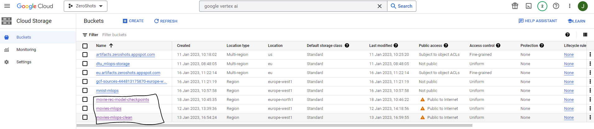
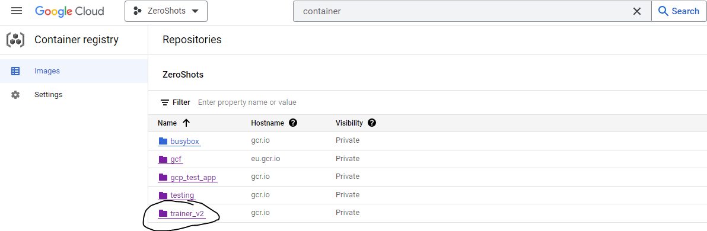

This is the report template for the exam. Please only remove the text formatted as with three dashes in front and behind like:
--- question 1 fill here ---
where you instead should add your answers. Any other changes may have unwanted consequences when your report is auto
generated in the end of the course. For questions where you are asked to include images, start by adding the image to
the figures subfolder (please only use .png, .jpg or .jpeg) and then add the following code in your answer:
markdown

In addition to this markdown file, we also provide the report.py script that provides two utility functions:
Running:
bash
python report.py html
will generate an .html page of your report. After deadline for answering this template, we will autoscrape
everything in this reports folder and then use this utility to generate an .html page that will be your serve
as your final handin.
Running
bash
python report.py check
will check your answers in this template against the constrains listed for each question e.g. is your answer too short, too long, have you included an image when asked to.
For both functions to work it is important that you do not rename anything. The script have two dependencies that can
be installed with pip install click markdown.
The checklist is exhaustic which means that it includes everything that you could possible do on the project in relation the curricilum in this course. Therefore, we do not expect at all that you have checked of all boxes at the end of the project.
make_dataset.py file such that it downloads whatever data you need andrequirements.txt file with whatever dependencies that you are usingpep8) while doing the projectEnter the group number you signed up on
Answer:
--- 17 ---
Enter the study number for each member in the group
Example:
sXXXXXX, sXXXXXX, sXXXXXX
Answer:
--- s212558, s210172, s184419, s213158, s213161 ---
What framework did you choose to work with and did it help you complete the project?
Answer length: 100-200 words.
Example: We used the third-party framework ... in our project. We used functionality ... and functionality ... from the package to do ... and ... in our project.
Answer:
--- We used the third-party framework Pytorch-Geometric, which is a deep learning framework for geometric data such as graphs. This framework was extremely beneficial for us as we were working with graphical data - movie predictions based on user ratings. We used Pytorch-Geometric to set up the graphs when we were making the datasets. Furthermore, from Pytorch-Geometric we used the SAGEConv class in the GNNEncoder part of our model. In our projet we also use the Pytorch framework, which made the handling of tensors convenient. We also used the torch.nn.Linear class for making the FC layers in our EdgeDecoder part of our model. ---
In the following section we are interested in learning more about you local development environment.
Explain how you managed dependencies in your project? Explain the process a new team member would have to go through to get an exact copy of your environment.
Answer length: 100-200 words
Example: We used ... for managing our dependencies. The list of dependencies was auto-generated using ... . To get a complete copy of our development enviroment, one would have to run the following commands
Answer:
--- We used the pipreqs package, as well as some manual additions, to manage our dependencies. We ran the pipreqs command in our project to generate a 'requirements.txt' file with the libraries, and the versions, required for our project. We experienced some problems with some of the libraries such as torch-geometric, so for those we would sometimes have to manually change the order and version of the install. We also have a 'requirements_docker_train.txt' file, which is used when making a docker image. To get a complete copy of our dependencies, one would have to make a new empty python environment, go to the project root, and run "pip install -r requirements.txt" ---
We expect that you initialized your project using the cookiecutter template. Explain the overall structure of your code. Did you fill out every folder or only a subset?
Answer length: 100-200 words
Example: From the cookiecutter template we have filled out the ... , ... and ... folder. We have removed the ... folder because we did not use any ... in our project. We have added an ... folder that contains ... for running our experiments. Answer:
--- We used the cookiecutter template to initialize our project. In the src/models folder we have made a 'model.py' file which describes our model, a 'train_model.py' script for training the model, and a 'predict_model.py' script for predictng. In the 'init.py' file we have included some paths. We have filled out the 'make_dataset.py' script in the src/data folder such that it takes the raw data and processes it, and then placed the processed data in the data/processed folder. The data processing includes some data enriching, which is done with the help of the 'oasis.py' script. We use both the raw and processed data folders, but we have removed the external and interim folders. ---
Did you implement any rules for code quality and format? Additionally, explain with your own words why these concepts matters in larger projects.
Answer length: 50-100 words.
Answer:
--- We wrote our code following the pep8 protocol, to have a single style for our whole project and make it easier for all our members to read the other members' code. We also used isort for sorting our imports. For the 'make_dataset.py' script, we implemented code from this this blog post, thus we decided to just leave the code format as it was. Following a specific code format such as pep8 is important in large projects because this means that code written from different users will be in the same format and thus more understandable. ---
In the following section we are interested in how version control was used in your project during development to corporate and increase the quality of your code.
How many tests did you implement and what are they testing in your code?
Answer length: 50-100 words.
Example: In total we have implemented X tests. Primarily we are testing ... and ... as these the most critical parts of our application but also ... .
Answer:
--- question 7 fill here ---
What is the total code coverage (in percentage) of your code? If you code had an code coverage of 100% (or close to), would you still trust it to be error free? Explain you reasoning.
Answer length: 100-200 words.
Example: The total code coverage of code is X%, which includes all our source code. We are far from 100% coverage of our code and even if we were then...*
Answer:
--- question 8 fill here ---
Did you workflow include using branches and pull requests? If yes, explain how. If not, explain how branches and pull request can help improve version control.
Answer length: 100-200 words.
Example: We made use of both branches and PRs in our project. In our group, each member had an branch that they worked on in addition to the main branch. To merge code we ...
Answer:
--- In our GitHub repository we used three branches: master, test, and dev. In our master branch we have our producting-ready code, which is code that we know is running as it should (but at the start of the project it didn't have all the right functionality). When we were developing our model, data, training, etc. we would all push to the dev branch. When pushing to the dev branch no tests are performed, making the process faster. This is useful when we are just making small changes or fixes, e.g. spelling mistakes. We would then merge the dev branch to the test branch, where we would perform our tests. This process takes a bit of time, but since we don't do it as often this is not a problem. When we have code that we are satisfied with in our test branch, we would send a pull request to the master branch. ---
Did you use DVC for managing data in your project? If yes, then how did it improve your project to have version control of your data. If no, explain a case where it would be beneficial to have version control of your data.
Answer length: 100-200 words.
Example: We did make use of DVC in the following way: ... . In the end it helped us in ... for controlling ... part of our pipeline
Answer:
--- question 10 fill here ---
Discuss you continues integration setup. What kind of CI are you running (unittesting, linting, etc.)? Do you test multiple operating systems, python version etc. Do you make use of caching? Feel free to insert a link to one of your github actions workflow.
Answer length: 200-300 words.
Example: We have organized our CI into 3 separate files: one for doing ..., one for running ... testing and one for running ... . In particular for our ..., we used ... .An example of a triggered workflow can be seen here:
Answer:
--- question 11 fill here ---
In the following section we are interested in learning more about the experimental setup for running your code and especially the reproducibility of your experiments.
How did you configure experiments? Did you make use of config files? Explain with coding examples of how you would run a experiment.
Answer length: 50-100 words.
Example: We used a simple argparser, that worked in the following way: python my_script.py --lr 1e-3 --batch_size 25
Answer:
--- question 12 fill here ---
Reproducibility of experiments are important. Related to the last question, how did you secure that no information is lost when running experiments and that your experiments are reproducible?
Answer length: 100-200 words.
Example: We made use of config files. Whenever an experiment is run the following happens: ... . To reproduce an experiment one would have to do ...
Answer:
--- question 13 fill here ---
Upload 1 to 3 screenshots that show the experiments that you have done in W&B (or another experiment tracking service of your choice). This may include loss graphs, logged images, hyperparameter sweeps etc. You can take inspiration from this figure. Explain what metrics you are tracking and why they are important.
Answer length: 200-300 words + 1 to 3 screenshots.
Example: As seen in the first image when have tracked ... and ... which both inform us about ... in our experiments. As seen in the second image we are also tracking ... and ...
Answer:
--- question 14 fill here ---
Docker is an important tool for creating containerized applications. Explain how you used docker in your experiments? Include how you would run your docker images and include a link to one of your docker files.
Answer length: 100-200 words.
Example: For our project we developed several images: one for training, inference and deployment. For example to run the training docker image:
docker run trainer:latest lr=1e-3 batch_size=64. Link to docker file:Answer:
--- question 15 fill here ---
When running into bugs while trying to run your experiments, how did you perform debugging? Additionally, did you try to profile your code or do you think it is already perfect?
Answer length: 100-200 words.
Example: Debugging method was dependent on group member. Some just used ... and others used ... . We did a single profiling run of our main code at some point that showed ...
Answer:
--- question 16 fill here ---
In the following section we would like to know more about your experience when developing in the cloud.
List all the GCP services that you made use of in your project and shortly explain what each service does?
Answer length: 50-200 words.
Example: We used the following two services: Engine and Bucket. Engine is used for... and Bucket is used for...
Answer:
--- question 17 fill here ---
The backbone of GCP is the Compute engine. Explained how you made use of this service and what type of VMs you used?
Answer length: 100-200 words.
Example: We used the compute engine to run our ... . We used instances with the following hardware: ... and we started the using a custom container: ...
Answer:
--- question 18 fill here ---
Insert 1-2 images of your GCP bucket, such that we can see what data you have stored in it. You can take inspiration from this figure.
Answer:
---  ---
Upload one image of your GCP container registry, such that we can see the different images that you have stored. You can take inspiration from this figure.
Answer:
---  ---
Upload one image of your GCP cloud build history, so we can see the history of the images that have been build in your project. You can take inspiration from this figure.
Answer:
--- question 21 fill here ---
Did you manage to deploy your model, either in locally or cloud? If not, describe why. If yes, describe how and preferably how you invoke your deployed service?
Answer length: 100-200 words.
Example: For deployment we wrapped our model into application using ... . We first tried locally serving the model, which worked. Afterwards we deployed it in the cloud, using ... . To invoke the service an user would call
curl -X POST -F "file=@file.json"<weburl>Answer:
--- question 22 fill here ---
Did you manage to implement monitoring of your deployed model? If yes, explain how it works. If not, explain how monitoring would help the longevity of your application.
Answer length: 100-200 words.
Example: We did not manage to implement monitoring. We would like to have monitoring implemented such that over time we could measure ... and ... that would inform us about this ... behaviour of our application.
Answer:
--- question 23 fill here ---
How many credits did you end up using during the project and what service was most expensive?
Answer length: 25-100 words.
Example: Group member 1 used ..., Group member 2 used ..., in total ... credits was spend during development. The service costing the most was ... due to ...
Answer:
--- question 24 fill here ---
In the following section we would like you to think about the general structure of your project.
Include a figure that describes the overall architecture of your system and what services that you make use of. You can take inspiration from this figure. Additionally in your own words, explain the overall steps in figure.
Answer length: 200-400 words
Example:
The starting point of the diagram is our local setup, where we integrated ... and ... and ... into our code. Whenever we commit code and puch to github, it auto triggers ... and ... . From there the diagram shows ...
Answer:
--- question 25 fill here ---
Discuss the overall struggles of the project. Where did you spend most time and what did you do to overcome these challenges?
Answer length: 200-400 words.
Example: The biggest challenges in the project was using ... tool to do ... . The reason for this was ...
Answer:
--- question 26 fill here ---
State the individual contributions of each team member. This is required information from DTU, because we need to make sure all members contributed actively to the project
Answer length: 50-200 words.
Example: Student sXXXXXX was in charge of developing of setting up the initial cookie cutter project and developing of the docker containers for training our applications. Student sXXXXXX was in charge of training our models in the cloud and deploying them afterwards. All members contributed to code by...
Answer:
--- question 27 fill here ---
{kind=link}
{kind=link}
{kind=link}
{kind=link}
{kind=link}